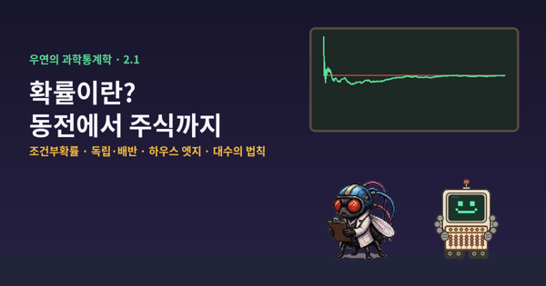
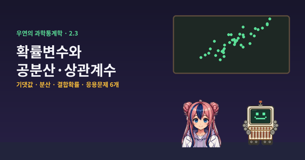

2.1확률이란? 동전던지기부터 주식투자까지카지노가 항상 이기는 이유(확률의 정의·기본 성질, 도수론적·주관적 관점, 사전·사후확률, 조건부확률, 독립·배반사건, 도박꾼의 오류, 하우스 엣지), 주식투자와 확률(독립·종속 투자 전략, 배반사건, 상관≠인과),…

2.3확률변수와 확률분포, 공분산과 상관계수확률변수와 확률분포, 이산·연속 확률변수, 기댓값과 분산의 성질, 결합확률분포와 주변확률분포, 공분산, 피어슨 상관계수, 공분산·상관계수 응용문제 6개 풀이